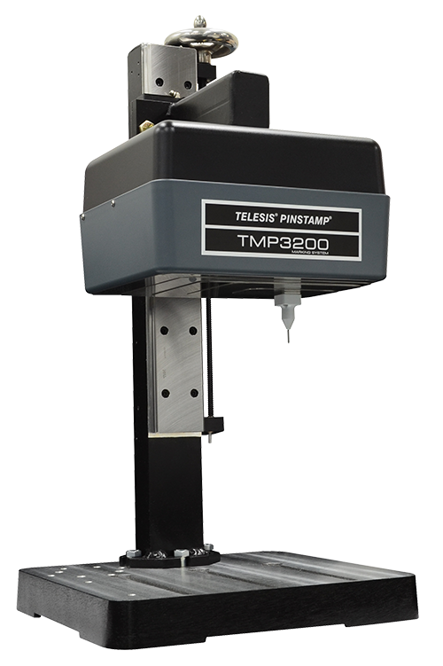

A Generous Marking Window
TMP3200
The TMP3200 is a simple, yet robust belt-driven, dual-rail system that uses an X/Y platform and yields high-quality characters. The rugged design means a long-lasting, low maintenance operation while having the ability to mark a wide range of materials from soft plastics to hardened steel (rc60). The floating pin technology accommodates surface irregularities up to 0.25 in (6mm) easily and the generously sized marking window sets this dot peen marker apart from the rest.

Features
- Dot Density: Up to 200 dots-per-inch (79 dots-per-centimeter)
- Choice of interchangeable marking pins: .001 in – .018 in (0.03 mm – 0.34 mm)
- Marking speeds up to six characters per second
- Automatically generates serial numbers, time, date, and shift coes
- Store up to 400 marking patterns
- Easily interfaced to PLCs and host computers
Optional Accessories
- Rotary fixtures for marking circumferences of cylindrical parts
- Marking head mounting post, including programmable Z-axis
- Panel-mount and IP/NEMA rated controllers
- Easy and free software upgrades